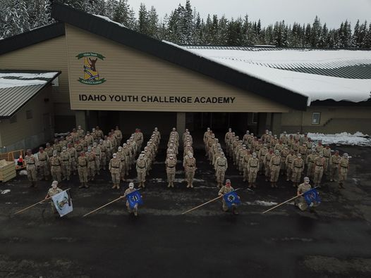
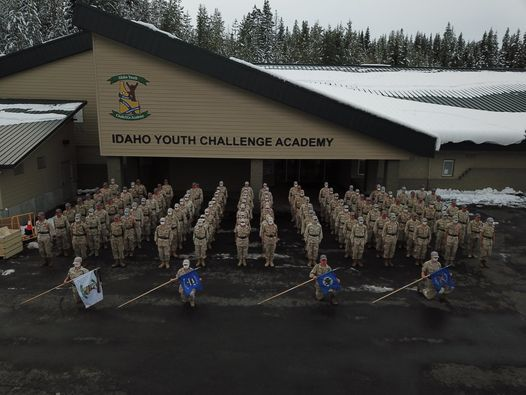

Rueben Durfee's Biography
Hello I am Rueben Durfee originally from Newplymouth Idaho. I graduated with my diploma from a quasi military highschool called the Idaho youth challenge accademy in Pierce Idaho. I graduated with multiple certifications from FEMA such as ICS0100,0200,0700, and along the way I also took a ham radio course. after some exciting experiences in highschool, I worked in construction for a short time being a safety inspector, and then worked at walmart as maintnance cleaning and fixing things. I also learned how to program one of the robots they use for scrubbing floors while working there. I am now a student at Bridgerland Tech for web & Mobile Development. I am persuing a career in the tech industry because I am looking for new opportunities. my goal is to get into the Front end Development, to do this I am learning html, PHP, CSS, databases and mysql. I want to be a front end developer because I like being creative and I like to be outdoors and enjoying nature. I have plans to make a photography website where you can hire me or someone else to come out and use a drone or just get some photos taken for a party, trip, land surveyors or construction sites. on my free time I like to go hiking, running and occasionally play video games with friends and family. I also have a youtube channel where I have learned video edditing skills and if you want to check it out here, I also have oher experience with using arduinos and c code and a small amount of soldering which I learned from apprenticing under a mentor prior to entering tech school. Some financial goals I have are to be retired by 25 years old, the way I plan to do this is by buying dividend paying companies that will pay me monthly income that I can live on and pay bills with. In the world of investing they call this a fire fund and there are many that persue this goal. Currently I hold positions in 2 private companies better families, tast equity and positions in 23 other publicly traded companies.

 
